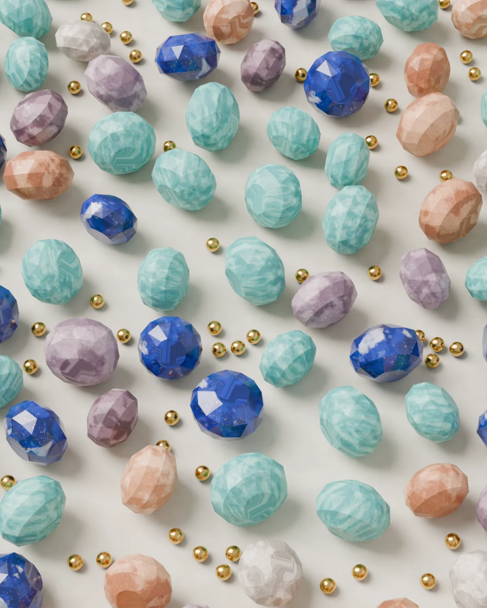

Amazonit
Główne złoża: Peru, Madagaskar
Niebiesko-zielony skaleń z delikatnymi jaśniejszymi smugami. Po oszlifowaniu ma matowy, miękki połysk.
1Skala Mohsa10
Średnio twardy, unikaj uderzeń
W naszych bransoletkach i brelokach pracujemy z kamieniami naturalnymi. Poniżej piszemy, skąd najczęściej pochodzi każdy z nich i czego się po nim spodziewać na co dzień.
Skala Mohsa mówi o odporności na zarysowania. Szkło ma około 5,5, a paznokieć 2,5. Twardy kamień wciąż może pęknąć przy mocnym uderzeniu.
Główne złoża: Peru, Madagaskar
Niebiesko-zielony skaleń z delikatnymi jaśniejszymi smugami. Po oszlifowaniu ma matowy, miękki połysk.
Średnio twardy, unikaj uderzeń
Główne złoża: Brazylia, Afganistan
Kamień o przygaszonych odcieniach, od perłowej szarości po śliwkowy róż. Każdy koralik ma trochę inny kolor.
Twardy, odporny na zarysowania
Główne złoża: Indie, Norwegia
Brzoskwiniowy skaleń z drobinami, które połyskują w świetle jak miedź.
Średnio twardy, unikaj uderzeń
Główne złoża: Afganistan
Głęboki błękit z drobinami pirytu, które błyszczą jak złoto. Jaśniejsze plamki to naturalny kalcyt.
Średnio twardy, unikaj uderzeń
Główne złoża: RPA, Australia
Kwarc z włóknistą strukturą, przez którą złote pasma zmieniają jasność wraz z ruchem ręki.
Twardy, odporny na zarysowania
Główne złoża: Peru, Demokratyczna Republika Konga
Morski kamień związany ze złożami miedzi. Turkus miesza się w nim z ciemnym brązem i kremową bielą.
Miękka, chroń przed uderzeniami
Główne złoża: Brazylia, Afganistan
Odcienie maliny, różu i ciemnego wina w jednym sznurze. Żaden koralik nie jest taki sam.
Twardy, odporny na zarysowania
Główne złoża: Brazylia, Indie
Głęboka czerń, która po oszlifowaniu mocno odbija światło.
Twardy, odporny na zarysowania
Główne złoża: Sri Lanka, Indie
Mleczny, półprzezroczysty kamień o miękkim, chłodnym blasku.
Średnio twardy, unikaj uderzeń
Główne złoża: Meksyk, Pakistan
Ciepły, kremowo-miodowy kamień z mlecznymi smugami. Przepuszcza światło i wygląda jak zastygły miód.
Miękki, chroń przed zarysowaniami
Główne złoża: Brazylia, Szkocja
Przezroczysty kwarc w kolorze mocnej herbaty, prawie czarny przy grubszych ściankach.
Twardy, odporny na zarysowania
Główne złoża: Brazylia, Urugwaj
Odmiana kwarcu w odcieniach fioletu i liliowego różu.
Twardy, kolor może blaknąć na silnym słońcu
Główne złoża: Brazylia, Madagaskar
Błękit czystej wody z naturalnymi spękaniami widocznymi w środku kamienia.
Twardy, odporny na zarysowania
Główne złoża: Kanada, Madagaskar
Szary, półprzezroczysty skaleń, który pod odpowiednim kątem odbija chłodny błysk.
Średnio twardy, unikaj uderzeń
Główne złoża: Tanzania
Zielony zoisyt z czarnymi żyłkami i fioletowo-różowymi plamami rubinu.
Średnio twardy, unikaj uderzeń
Główne złoża: Madagaskar, Brazylia
Mleczny, delikatnie różowy kwarc. Lekkie zamglenie jest jego naturalną cechą.
Twardy, kolor może blaknąć na silnym słońcu
Główne złoża: Meksyk
Kremowy kamień w czarne i brązowe cętki, przypominający sierść dalmatyńczyka.
Średnio twardy, unikaj uderzeń
Główne złoża: Brazylia, Indie
Odmiana chalcedonu z ułożonymi warstwami pasmami w kolorach ziemi.
Twardy, odporny na zarysowania
Główne złoża: Chiny, Afganistan
Jasnozielony kamień o gładkim, woskowym dotyku.
Miękki, chroń przed uderzeniami
Przekładki, łańcuszki, zapięcia i zawieszki mają złoty kolor. Żeby zachować ich połysk, zdejmuj bransoletkę do kąpieli i nie pryskaj jej perfumami.
Kamień jest naturalny, więc ma różnice w kolorze i rysunku. Twoja bransoletka będzie wyglądać podobnie do tej na stronie, ale nie identycznie.
